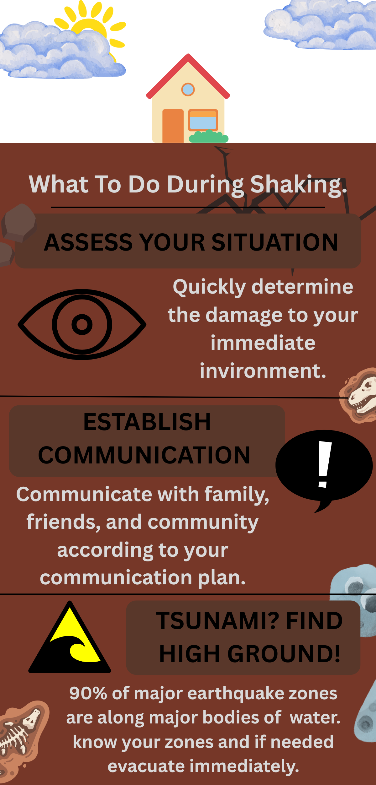
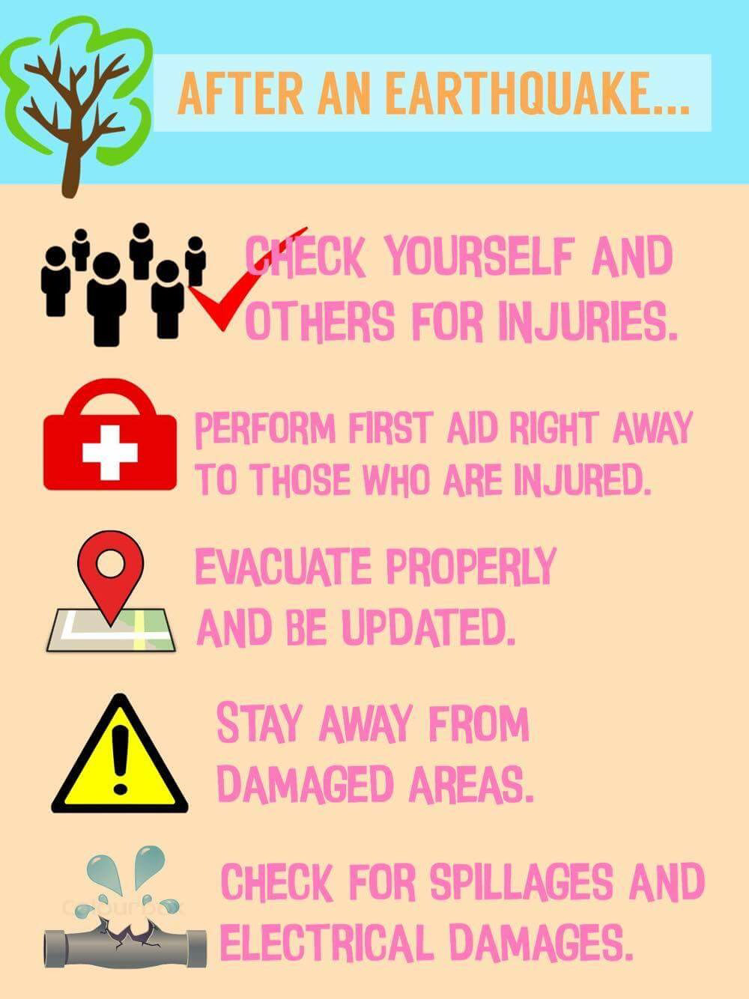

What to do during an earthquake strikes
The steps you should take during an earthquake depend on your location.
If You Are Inside
- Stay inside. Do not get in a doorway this does not provide protection from falling or
flying objects, and you might not be able to remain standing.
- Drop, Cover, and Hold On
- Drop down to the ground so the earthquake doesn’t knock you down.
- Cover your head and neck with your arms to protect you from falling debris.
If possible, crawl under a sturdy desk, table or other piece of furniture for additional protection.
Stay away from glass, windows, outside doors and walls, and other items that could fall.
- Hold on to any sturdy item you can until the shaking stops.
If You Are Outside
- Move away from buildings, streetlights, and utility wires.
If You Are in a Vehicle
- Pull to the side of the road and stay inside until the earthquake is over. Do not stop under overpasses or power lines.

